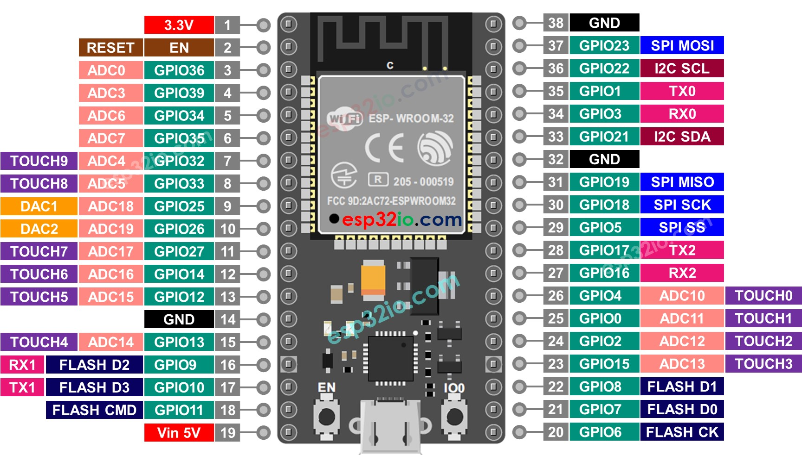

Avant d’entrer dans le cœur du projet, il a été nécessaire de passer par une phase de prise en main du microcontrôleur ESP32 et de son environnement de développement. L’ESP32, largement utilisé dans les systèmes embarqués et les applications connectées, se distingue par sa polyvalence, la richesse de ses entrées/sorties et sa connectivité Wi-Fi intégrée, des caractéristiques essentielles pour un système de gestion et de chronométrage piloté via une interface web.
Cette première étape avait pour objectif de valider le bon fonctionnement du matériel et des outils logiciels avant d’aborder les fonctionnalités plus complexes du démonstrateur. Elle a consisté à installer et configurer l’environnement de développement, à créer un premier projet, puis à tester un programme simple permettant de faire clignoter la LED intégrée de l’ESP32. J’ai ensuite exploré le brochage de la carte afin de piloter des LEDs externes et de manipuler concrètement les sorties GPIO, dans le respect des contraintes électriques.
Cette phase d’initiation a permis de confirmer la communication entre l’ordinateur et l’ESP32, ainsi que la bonne maîtrise des bases de la programmation embarquée. Elle constitue une fondation essentielle pour la suite du projet, en préparant l’intégration du lecteur RFID, la gestion des capteurs infrarouges et la mise en place de la communication Wi-Fi nécessaire à l’affichage des informations sur l’interface web lors des démonstrations.
Pour cette étape de prise en main, j’ai d’abord effectué plusieurs recherches sur Internet afin de mieux comprendre comment configurer l’ESP32. Finalement, j’ai suivi tutoriel vidéo sur YouTube qui expliquait pas à pas l’installation et la création d’un premier projet avec PlatformIO.
Comme Visual Studio Code était déjà installé sur mon ordinateur, je n’ai pas eu besoin de l’installer à nouveau. L’étape essentielle consistait donc à ajouter l’extension PlatformIO. Pour cela, je suis allé dans la marketplace de VS Code (raccourci Ctrl + Shift + X), puis dans la barre de recherche située en haut, j’ai tapé “PlatformIO”. Après avoir sélectionné le premier résultat et cliqué sur install, l’extension s’est installée correctement. On peut reconnaître son activation grâce au logo en forme de tête d’alien qui apparaît à gauche de l’éditeur. En cliquant sur ce logo, on accède à l’interface de PlatformIO. C’est là que j’ai créé mon premier projet. Dans la partie droit, j’ai cliqué sur “New Project”. Une fenêtre intitulée projet Wizard s’est alors ouverte :
Une fois la création terminée, structure du projet apparaît dans l’explorateur de fichiers à gauche de l’écran. On y trouve notamment un dossier src (source). C’est dans ce dossier que se trouve le fichier main.cpp, qui est le fichier principal du programme. Le fichier main.cpp correspond au point d’entrée : c’est ici que l’on écrit les instructions qui seront compilées puis exécutées par l’ESP32.
L’ESP32-WROOM-32 dispose des broches GPIO utilisables, chacune ayant des fonctionnalités différentes. Certaines peuvent être utilisées librement comme entrée ou sortie numérique, d’autres possèdent des fonctions spécifiques, et quelques-unes doivent être utilisées avec précaution.
Les broches GPIO0 et GPIO2 sont importantes à connaître. GPIO0 sert au boot, donc elle doit rester en entrée au démarrage, mais peut être utilisée comme entrée ou sortie numérique par la suite. GPIO2 est reliée à la LED intégrée de la carte, ce qui en fait le choix idéal pour les premiers tests de clignotement (blink). Elle peut également être configurée en entrée ou sortie numérique et possède une fonction ADC, mais il faut faire attention lors du démarrage.
La majorité des broches, comme GPIO4, 5, 12, 13, 14, 15, 16, 17, 18, 19, 21, 22, 23, 25, 26, 27, 32 et 33, sont très polyvalentes : elles peuvent être utilisées comme entrées ou sorties numériques, pour générer un signal PWM, ou pour certaines d’entre elles comme entrées analogiques (ADC). Les broches 25 et 26 possèdent également un DAC, ce qui permet de générer une tension analogique.
Les broches GPIO34, 35, 36 et 39 sont uniquement des entrées et peuvent servir pour lire des capteurs analogiques ou numériques, mais elles ne peuvent pas piloter de LED ni être configurées en sortie. Certaines broches sont réservées à des fonctions particulières et ne doivent pas être utilisées pour un usage standard, comme GPIO6 à GPIO11 qui sont connectées à la mémoire flash interne.
Pour les communications, l’ESP32-WROOM-32 dispose de plusieurs interfaces intégrées à savoir UART0 (GPIO1 TX0 et GPIO3 RX0) pour la programmation et le moniteur série, UART2 (GPIO16 TX2 et GPIO17 RX2) pour une liaison série supplémentaire, I2C (GPIO21 SDA et GPIO22 SCL) pour des modules comme des écrans ou certains modules RFID et SPI (GPIO23 MOSI, GPIO19 MISO, GPIO18 SCK, GPIO5 CS) pour des modules RFID utilisant SPI

source : doc
source : ESP DEV
Pour faire clignoter la LED intégrée, j’ai utilisé la broche GPIO2. Le code m’a permis de vérifier rapidement que la carte et PlatformIO fonctionnaient correctement.
#define LED_BUILTIN 2
void setup() {
pinMode(LED_BUILTIN, OUTPUT);
}
void loop() {
digitalWrite(LED_BUILTIN, HIGH);
delay(500);
digitalWrite(LED_BUILTIN, LOW);
delay(500);
}
Dans ce programme, j’ai défini la LED intégrée avec #define LED_BUILTIN 2, configuré la broche comme sortie dans setup(), puis allumé et éteint la LED dans loop() avec un délai de 500 ms.
Après avoir testé la LED intégrée, je me suis amusé à faire clignoter deux LEDs externes branchées sur les broches GPIO23 et GPIO22. Elles clignotent en même temps et cela m’a permis de tester la gestion simultanée de plusieurs GPIO.
#define LED1 23
#define LED2 22
void setup() {
pinMode(LED1, OUTPUT);
pinMode(LED2, OUTPUT);
}
void loop() {
digitalWrite(LED1, HIGH);
digitalWrite(LED2, HIGH);
delay(500);
digitalWrite(LED1, LOW);
digitalWrite(LED2, LOW);
delay(500);
}
Avec ce code, les deux LEDs externes s’allument et s’éteignent en même temps, ce qui m’a permis de me familiariser avec le contrôle des GPIO avant d’intégrer le lecteur RFID.
{kind=link}
{kind=link}
{kind=link}
{kind=link}
{kind=link}